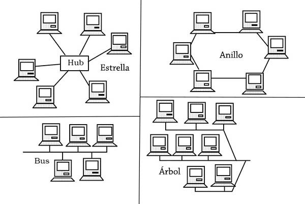
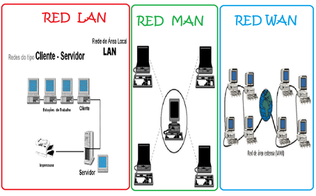
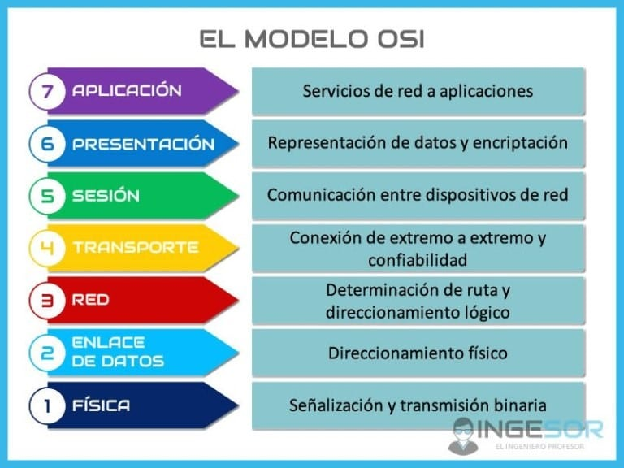

Parte 2. 1- ¿Qué son y para que sirven las normas internacionales?
Las normas "ISO" Su sigla traducen Organización Internacional para la Estandarización, es una organización no gubernamental que produce normas internacionales, industriales y comerciales con el propósito de facilitar el comercio, el intercambio de información y contribuir con unos estándares para el desarrollo y
transferencia de tecnologías, especificamente las normas 14764 ISO para software, aclaran requerimientos para el Proceso de Mantenimiento del Software, sin embargo Las normas ISO más relevantes para la ciberseguridad son la ISO 27001 y la ISO 27002. La primera establece los requisitos para un Sistema de Gestión de la Seguridad de la Información (SGSI), mientras que la segunda ofrece directrices para el establecimiento de medidas de seguridad efectivas
Pero, ¿para qué sirven?, pues las normas ISO son imprescindibles para garantizar la seguridad de la información del mundo digital, además que directamente fueron creadas con el objetivo de ayudar a las empresas a establecer unos niveles de homogeneidad en relación con la gestión, prestación de servicios y desarrollo de productos en la industria.
algunos beneficios de utilizar las normas ISO son:
- Aprovechamiento óptimo de los recursos informáticos.
- intercambio rápido de documentos
- seguridad informática
- simplificación del mantenimiento.
Parte 2. 2.1- Topologías de red
La topología de red es un concepto que hace referencia a la forma en la que está dispuesta una red, usualmente sus nombres haciendo referencia a la figura que representa
he aquí unos ejemplos:
- Topología de Punto: Conexión directa entre dos dispositivos.
- Topología de Estrella:La más utlizada, todos los dispositivos se conectan a un nodo central.
- Topología de Autobús: Cada estación de trabajo está conectada en serie al cable central principa
- Topología de Anillo: los dispositivos de red están conectados entre sí de modo que el último dispositivo de red se conecte al primero
- Topología de Malla: los nodos están vinculados con conexiones de tal manera que las rutas entre al menos algunos puntos de la red estén disponibles, es decir cada dispositivo se conecta a varios otros
- Topología Híbrida: En donde se combina dos o más topologías básicas
- Topología de conexión en cadena: Consiste en dspositivos conectados en serie, uno tras otro, no es muy utilizada debido a su alto nivel de riesgo
- Topología de Árbol: Combina las topologías de bus y estrella

Parte 2. 2.2- Categorías de red
En función del tamaño y del alcance de la red de ordenadores, se puede establecer una diferenciación entre diversas dimensiones de red. Entre los tipos de redes más importantes se encuentran:
- Personal Area Networks (PAN) o red de área personal
- Local Area Networks (LAN) o red de área local
- Metropolitan Area Networks (MAN) o red de área metropolitana
- Wide Area Networks (WAN) o red de área amplia
- Global Area Networks (GAN) o red de área global

Parte 2. 2.3- Modelos de red
Los modelos de red en redes informáticas son marcos conceptuales que describen cómo se estructuran y gestionan las redes de computadoras, he aquí los más utilizados
- Modelo OSI (Open Systems Interconnection): Divide las funciones de red en siete capas (física, enlace de datos, red, transporte, sesión, presentación y aplicación).
- Modelo TCP/IP: Descripción: Consta de cuatro capas (acceso a la red, internet, transporte y aplicación)
- Modelo de Red Jerárquico:Descripción: Organiza la red en capas jerárquicas (núcleo, distribución y acceso)

Parte 2. 3- Normas de cableado estructurado
Las normas y estándares del cableado estructurado son un conjunto de pautas y especificaciones que regulan el diseño, la instalación, la operación y el mantenimiento de este tipo de redes
- ANSI/TIA/EIA-570-A:Esta norma se enfoca en la infraestructura de telecomunicaciones en residencias.
- ANSI/TIA/EIA-606-A: Esta norma proporciona directrices para la administración de la infraestructura de telecomunicaciones en edificios comerciales
- ANSI/TIA/EIA-607: Se centra en los requerimientos de puesta a tierra y conexiones equipotenciales para sistemas de telecomunicaciones en edificios comerciales.
- ANSI/TIA/EIA-758: Esta norma establece los requisitos para el cableado de planta externa de telecomunicaciones, es decir, el cableado que conecta diferentes edificios o instalaciones
- ANSI/TIA/EIA-568-B: Es una de las normas más conocidas y se refiere al cableado estructurado para edificios comerciales.
- ANSI/TIA/EIA-569-A: Esta norma se centra en las rutas y espacios de telecomunicaciones en edificios comerciales
Bibliografía
Aquí se encuentran todas las fuentes utilizadas en la investigación
- Corvo, H. S. (2019, 9 octubre). Topologías de red: concepto, tipos y sus características, ejemplos. Lifeder. https://www.lifeder.com/topologias-de-red/
- Prezi, O. (s. f.). ANSI/TIA/EIA-570-A: Normas de Infraestructura Residencial de. prezi.com. https://prezi.com/utwn73ozxfrv/ansitiaeia-570-a-normas-de-infraestructura-residencial-de/
- TIA-606-C: ¿Qué hay de nuevo? Normas de etiquetado de cables | BRADy. (s. f.). https://www.bradylatinamerica.com/recursos/norma-tia-606-c
- Prezi, A. M. O. (s. f.). NORMAS PARA REDES INFORMÁTICAS. prezi.com. https://prezi.com/go3bqbqrg54f/normas-para-redes-informaticas/
- ManageEngine. (s. f.). Topología de red: tipos e importancia | ManageEngine OpManager. https://www.manageengine.com/latam/network-monitoring/tech-topics/topologia-de-red.html
- Equipo editorial de IONOS. (2019, 18 julio). Conoce los tipos de redes más importantes. IONOS Digital Guide. https://www.ionos.com/es-us/digitalguide/servidores/know-how/los-tipos-de-redes-mas-conocidos/
- Corvo, H. S. (2019, 9 octubre). Topologías de red: concepto, tipos y sus características, ejemplos. Lifeder. https://www.lifeder.com/topologias-de-red/
- Equipo editorial, Etecé. (2023, 19 noviembre). Redes Informáticas - Concepto, tipos de red y elementos. Concepto. https://concepto.de/redes-informaticas/